What is an
AI project?
A project is a folder that holds your files and your standing instructions. Every chat you start inside that folder already knows the background, so you set it up once and work from it all year.
You repeat the same routine for four months. Tap each month to see what it costs you.
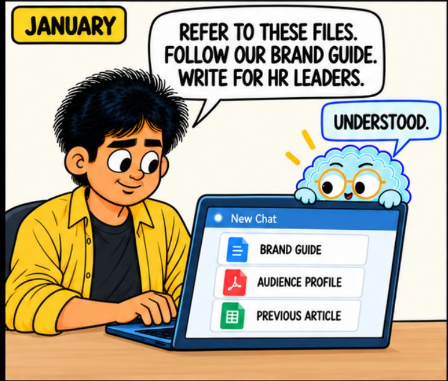
Month one feels fine
Time. You spend about two minutes finding and attaching files on every run. Across twelve months and a few people, that adds up to real hours.
Drift. You never brief the AI the same way twice, so the quality of the output moves around from one month to the next.
Missed files. When you forget a file, nothing warns you about it. The output simply becomes more generic.
No shared standard. Your colleague briefs the AI in their own way, so the same tool produces two different voices.
A folder that holds one continuing body of work. Load the files and write the standing instructions once. Every chat inside starts with all of it already in place.
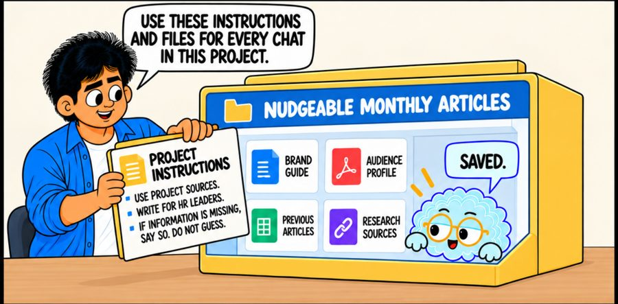
You set it up once. The files and the instructions go into the folder instead of into a chat.
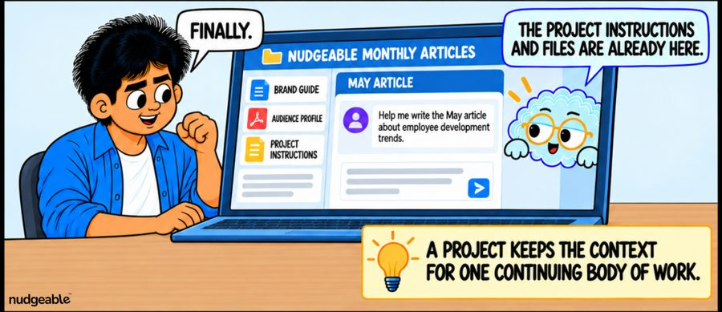
After that you simply ask. Every new chat in the folder already has the files and the instructions.
A project keeps answers inside the material you loaded. Tell it to say so when your files do not cover a question, instead of inventing an answer. This is the most useful line you can add to any project.
Ordinary chat pulls from everything the model absorbed in training, plus the open web. Useful for general questions, risky for your own material, because you cannot tell where an answer came from.
Google's notebook tool made the opposite choice first. It answers only from your uploaded sources and the conversation itself, and it admits when a source does not hold the answer. Every other tool then built its own bounded folder.
Official pages: Claude Projects, ChatGPT Projects, NotebookLM, Copilot Notebooks.
Four things. Tap any card for the detail and which tools support it.
Your documents
A project can hold PDFs, notes, spreadsheets, decks and past drafts. Some tools also accept audio, video and web links.
Standing instructions
These are the rules that apply to every chat in the folder. They cover audience, tone, format and the things the AI should never do.
Past chats
Conversations you have inside the folder stay available as background for the next one.
Things it produces
A project can produce drafts, documents, slides, tables, study guides and even audio and video walkthroughs of your own files.
These four rules keep a project useful instead of turning it into a folder you abandon in March.
One chat per piece of work
Do not pile every month into one endless thread. Start a fresh chat for each job. It still gets all the project files and instructions.
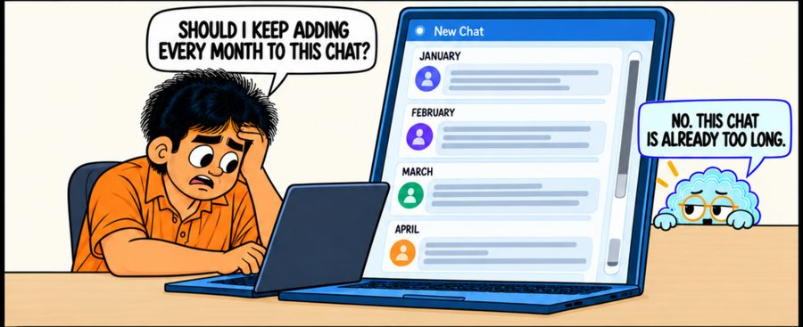
Do not do this. You keep one chat running since January and add every new job to it.
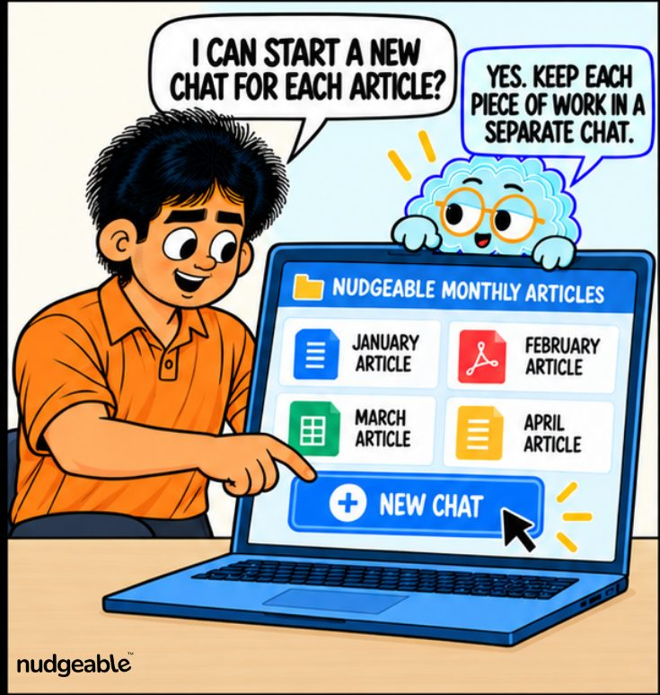
Do this instead. You start a new chat for each article.
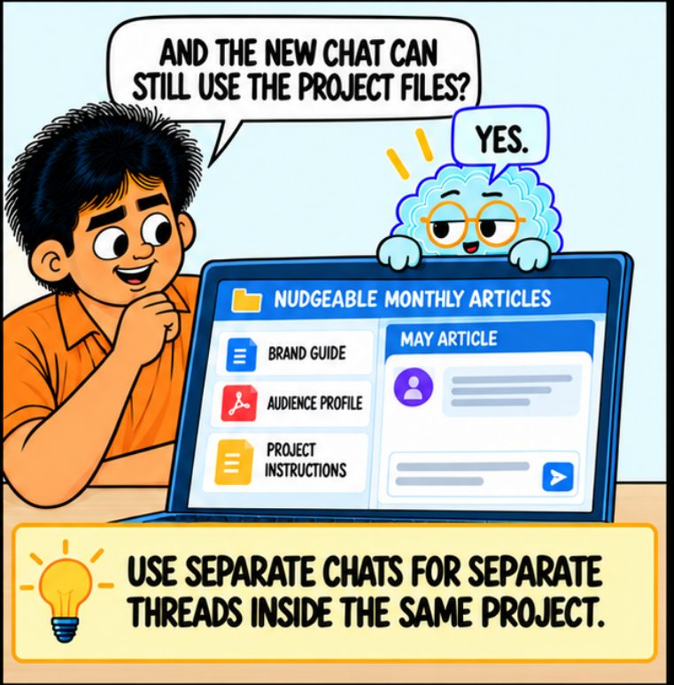
You lose nothing by doing it. The new chat still has every project file and instruction.
Every message in a thread is re-read on every new reply. A thread running since January carries eleven months of text before it even looks at today's question.
You pay for this twice. Replies get slower and vaguer, and old instructions from March start appearing in the December draft.
The fix costs you nothing. You start a new chat for each job and keep the same folder and the same context.
The project can remember
Corrections you give inside the folder can carry to the next chat in the same folder. They stay in that project and do not leak into your other work.
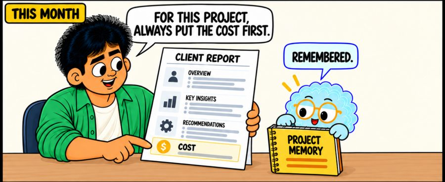
This month. You correct it once and tell it to put the cost line first.
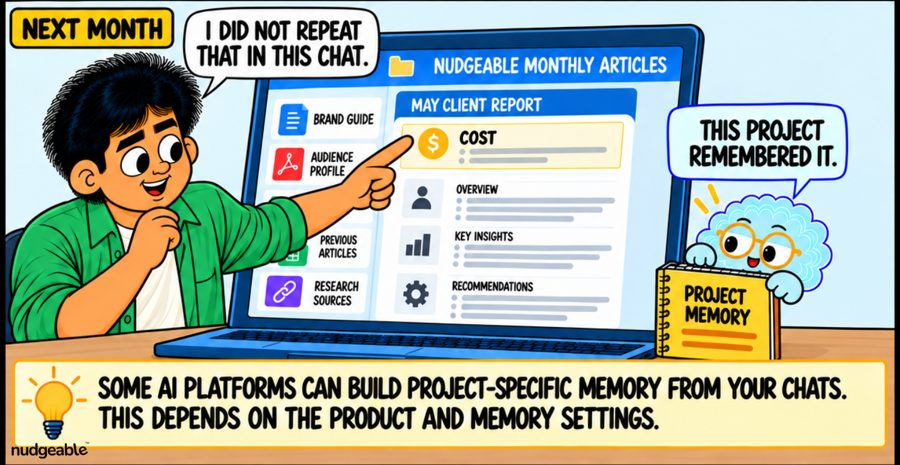
Next month. You do not repeat yourself, because the project remembered the correction.
Claude gives every project its own memory space and its own summary, so a correction inside Client A never reaches Client B. That separation is the safety feature, not a side effect.
If you start a chat in the wrong project, move it out. On Claude that chat then shifts from the project's memory into your general memory instead.
It can be switched off in settings, and an admin can switch it off for a whole organisation. Check before you rely on it.
Projects have three limits
Know these three before you move your whole week into a project.
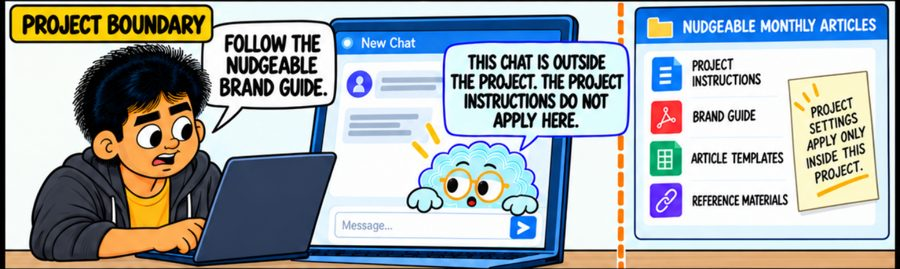
Instructions stop at the project. A chat started outside the project has never seen your brand guide.
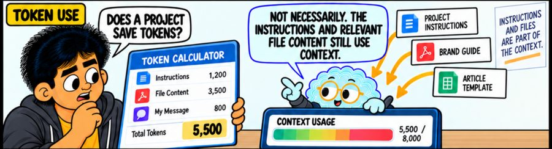
Files are read every time. The instructions and the file content load into every request. A project saves your effort, but it does not save the AI's reading space.
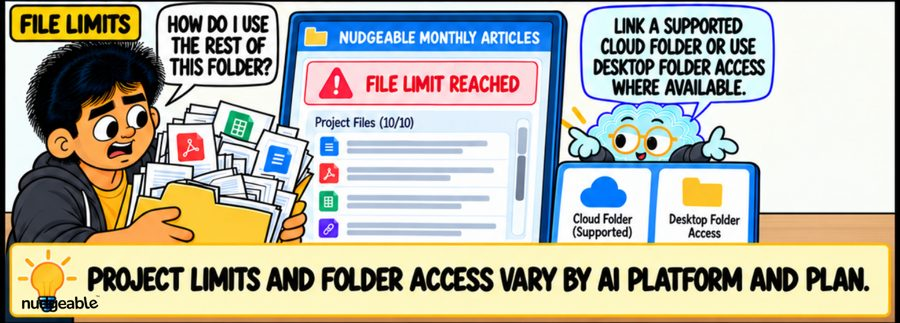
There is a file limit. You can only load so much into one project. Link a supported cloud folder if your tool offers one.
Check two things before you share
Who can change the files, and who can see the chats. Both vary by tool and by admin settings.
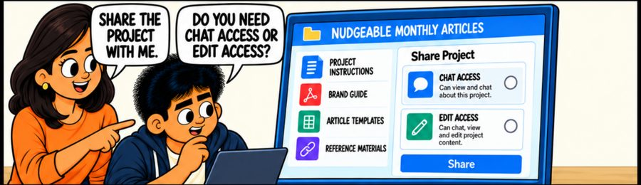
Two access levels. Chat access lets them use it. Edit access lets them change it.
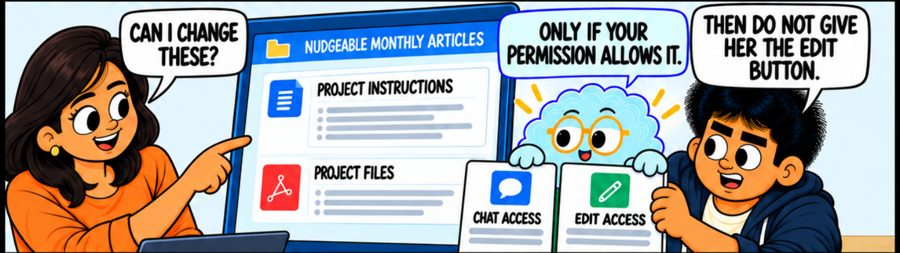
Give chat access by default. Give edit rights only to people who maintain the project.
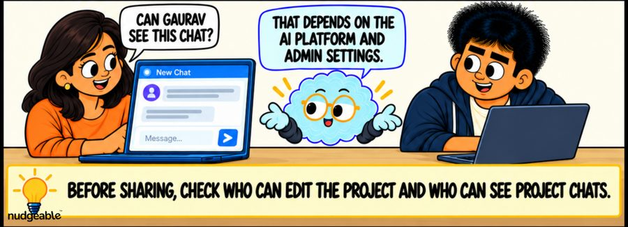
Chat visibility is a separate setting. A shared project does not always mean shared conversations.
In Google's notebooks, a shared folder still keeps each person's chat history private. You both see the same sources and outputs, not each other's questions.
Google NotebookLM. Add people by email as viewer or editor. Personal accounts support up to 50 people per notebook, plus a read only link for anyone.
ChatGPT. Share inside your workspace by email or link, with control over who can add files and start chats.
Claude. Sharing sits on Team and Enterprise plans, set by an admin, private or organisation-wide per project.
Copilot. Share with a Microsoft 365 group, so access follows team membership as people join and leave.
Tap a card to turn it over.
"A project saves tokens, so replies get cheaper."
Tap to flipThe instructions and the file content are read on every request. A project saves your typing and your mistakes, but it does not save the AI's reading space.
Tap to flip back"Once I set project instructions, the AI follows them everywhere."
Tap to flipThe instructions stop at the edge of the folder. A chat you start outside the project has never seen them, and this is the surprise people hit most often.
Tap to flip back"Google's notebooks cannot really be shared with a team."
Tap to flipGoogle's notebooks have one of the better sharing models, with viewer and editor roles, up to fifty people, and a read only link for anyone.
Tap to flip backA project holds the context for continuing work. A skill holds a process you want to reuse. You use a skill inside a project.
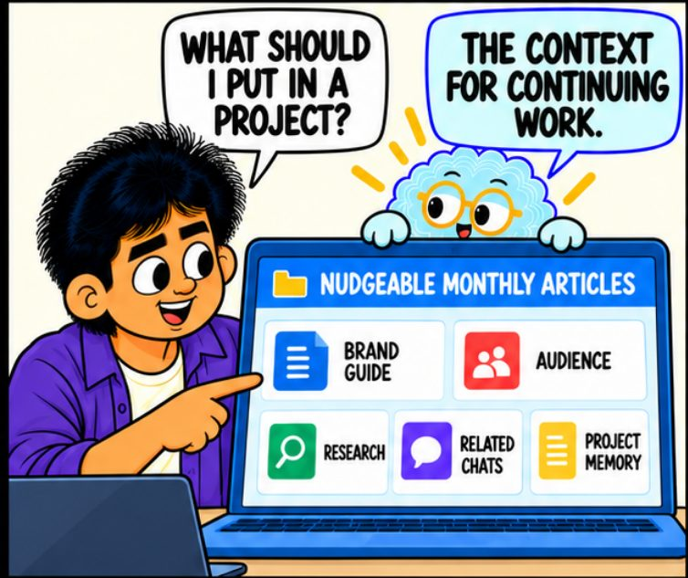
A project holds the context. It carries the brand guide, the audience, the research, the related chats and the memory.
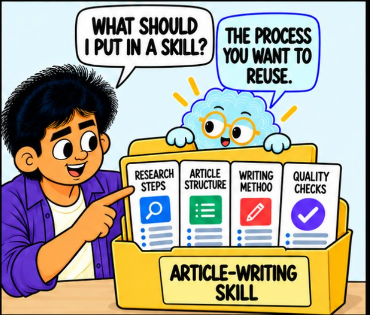
A skill holds the process. It carries the research steps, the structure, the writing method and the quality checks.
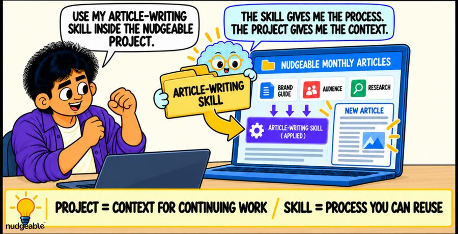
Use both together. When you run your writing skill inside the project, you get the process and the background at the same time.
Tap the options that fit your work. Copy the result straight into the instructions box of your project.
Who is it for
Tone
Length
Rules to enforce
Paste this into your project
Every major tool has this feature under a different name. They are not identical. Each name links to the official page.
| Tool | Called | What stands out | Sharing |
|---|---|---|---|
| Claude | Projects | Very large reading space per chat, plus its own separate memory for each project. | Team and enterprise plans, set up by an admin. |
| ChatGPT | Projects | Files, past chats and live sources such as a drive folder, all scoped to the folder. | Invite by email or link, with control over what each person can do. |
| Google Gemini | NotebookLM | The original. Still the strongest at turning your files into audio, video, timelines and quizzes. | Viewer or editor by email, up to 50 people, plus a read only link. |
| Microsoft Copilot | Notebooks | Pulls straight from Word, PowerPoint, Excel, Outlook and OneNote. | Share with a Microsoft 365 group, so access follows team membership. |
These folders started as a safer way to ask questions about your own documents. They are turning into shared team spaces that also produce the report, the deck and the walkthrough. Permissions and shared memory are the parts still being worked out.